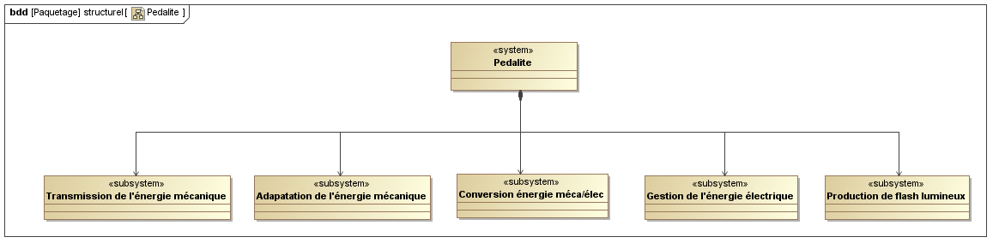
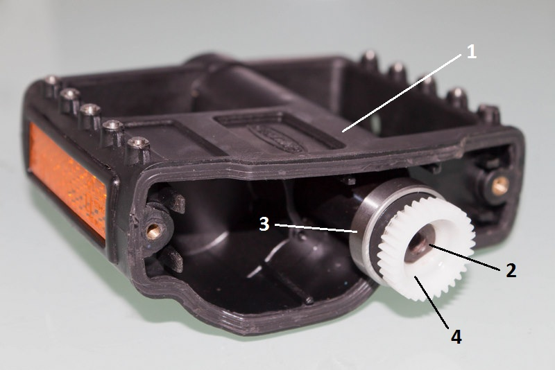

DIAGRAMME DE DEFINITION DES BLOCS.
Le diagramme de définition de blocs ci dessous présente la constitution de la pédale lumineuse KPL200.

 |
Corps (1)
axe (2) roulement (3) roue dentée (4) du train d'engrenage |
Created with the Personal Edition of HelpNDoc: Full featured EPub generator